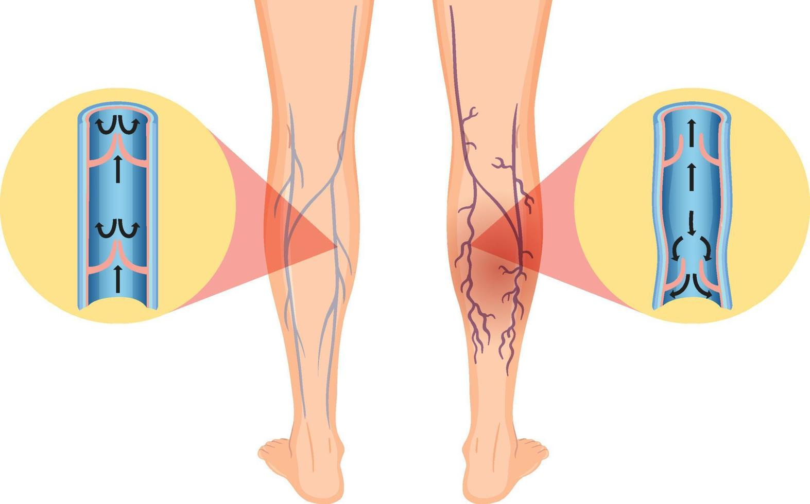
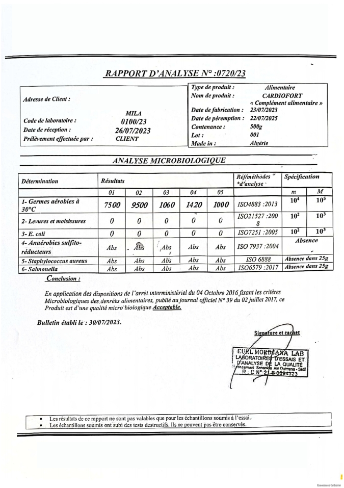

شكلت هذه المشكلة ضغطًا نفسيًا على علاقتنا الزوجية أيضًا. كنا نشعر بالخجل وعدم الثقة بأجسادنا. لم نكن نشعر بأننا مرتاحين بسبب ظهور الدوالي على أرجلي و أرجل زوجتي . وكان ذلك يؤثر بشكل كبير حتى على حياتنا الجنسية.

أهلاً بكم أنا إسمي محمود و اليوم
في مدونتي، أناقش معلومات عن مشكلة الدوالي التي أصبحت اليوم مشكلة الجميع رجالاً و نساءاً وأشارك
تجربتي الشخصية. هذا هو المقال الذي سيساعد جميع اللذين
يعتبرون أنفسهم لديهم مشاكل بالعروق البارزة او بالمعنى الأخر (الدوالي ) .
هل تتذكرون منذ حوالي سنة كتبت أنني أعاني من ألم فظيع في ساقاي واتضح أنها الدوالي؟ وطلبت نصيحتكم - كيف أتخلص منها.
حسنًا، لقد جـربت كل الطرق الشعبية المتاحة وغيرها من الأشياء لا قيمة لها، بالإضافة إلى منتجات لتحسين تدفق الدم وجوارب الضغط وما إلى ذلك. كـل هـذا محض هراء . لا يجدي نفعًا. لا فائدة منه.
دعونا نواصل الحديث...
اليوم جئت لكم بالحل الأكيد و النهائي للتخلص من مشكلة الدوالي و ليس فقط مشكلة الدوالي بل تنظيف اوردتكم أيضاً من أي ملوثات توجد بها و أيضاً الوقاية من هذه المشكلة مستقبلاً .
للعلم انه في السابق كان الأمر سيء جداً بالنسبى لي و لزوجتي .

أصبحت لا اريد النظر إلى ساقي و زوجتي أيضاً لم تعد تريد ان نذهب إلى الشاطئ كما كانت سابقاً تعشق البحر و السباحة بالبحر .
اليوم اقدم لكم المكمل الغذائي CardioFort

تحدثت مرة عن مشكلة الدوالي بصدق مع صديق لي. أخبرني أنه لا يوجد سوى مكمل غذائي واحد آمن وموثوق. "CardioFort " - هكذا يسمى هذا المنتج الرائع الذي ساعدني انا و زوجتي . اتضح أن يستخدم العديد من الرجال و النساء هذه الكبسولات لأغراض كثيرة لأن المنتج لديه العديد من الفوائد و سوف اقول لكم بعض منها .

فوائد CardioFort :
- يساعد على تدفق الدم بشكل طبيعي في الأوردة.
- التخلص من الدوالي .
- تقليل الألم في الساقين.
- تقليل تطور الجلطات الدموية.
- تحسين وظيفة الصمامات الوريدية.
- القضاء على مشاكل الأنسجة اللينة.
يعتبر المكمل الغذائي CardioFort الذي يستخـدم عن طريق الفم في شكل كبسولات إنه اداة ممتازة للوقاية و التخلص من مشاكل الدوالي المزعجة . سيصبح "شريان الحياة" لك، الذي ينبغي إستخدامه !
لقد بحثت بنفسي عن هذا المنتج و مكوناته و عرفت ان مكوناته جميعها طبيعية 100% و ليس به اي مواد كيميائية . و مكونات المنتج كانت كالأتي و سوف اشرح لكم أيضاً أهمية كل مكون منهم :
- الكستناء
- التوت
- كركم
- الزنجبيل
- نبات الزعرور
- اللوز

تتميز الكستناء بإحتوائها على العديد من العناصر الغذائية المفيدة جدًا مثل: البوتاسيوم والكالسيوم والعديد من الفيتامينات منها فيتامين ج وفيتامين ب وحمض الفوليك، وهي غنية بالمعادن المختلفة والدهون الغير مشبعة والمفيدة، ممّا يجعل لها دور كبير في وقاية الجسم من العديد من المشاكل الصحية .

مضادات الأكسدة الموجودة في التوت تعزز تدفق الدم في الاوردة و الشرايين . هذا يمكن أن يساعد في تحسين توسيع الأوعية الدموية وتحسين تدفق الدم في الأوعية.

يساهم في تحسين وظيفة الأوعية الدموية عن طريق تعزيز تدفق الدم وتوسيع الأوعية الدموية و خفض ضغط الدم و تحسين مستوى الكوليسترول .

الزنجبيل يحتوي على مركبات مضادة للالتهابات ومضادة للأكسدة، وهذه المركبات قد تساعد في تحسين تدفق الدم وتقليل التورم. بالإضافة إلى ذلك، الزنجبيل يمكن أن يساهم في تحسين صحة الأوعية الدموية بشكل عام.

يساعد في تحسين وظائف القلب و تحسين مستوى الاكسجين في الجسم و وتقليل مخاطر ظهور الدوالي و يساعد في توسيع الأوردة .

اللوز غنية بالدهون الصحية مثل الدهون غير المشبعة والأحماض الدهنية أوميجا-3. هذه الدهون يمكن أن تساعد في زيادة مستويات الكوليسترول الجيد (HDL) في الدم، مما يقلل من تراكم الدهون في الأوعية الدموية ويحسن من صحتها.
قررت طلب المنتج و بالفعل طلبته عن طريق الشركة المصنعة للمنتج و سوف أدع لكم الرابط بالأسفل حتى إذا أردتم طلبه
جاء المنتج في غضون أيام. كما قلت، كل شيء كام سري تمامًا، لم
يكن لدى عامل التوصيل أي فكرة عما يوجد داخل الصندوق. فيما يلي
نتائجي خلال عدة أيام من الإستخدام
أيضاً لن تصدقوا و لكن المنتج مصدق عليه و مر بجميع مراحل الإختبارات وفقاً للمعايير العالمية !
و هنا سوف أضع لكم شهادة التصديق على المنتج

تجربتي الشخصية من استخدام CardioFort خلال أسابيع
بدأت استخدم هـذا المنتج بناءً على التعليمات. وخمّنوا ما حدث؟ خلال أيام فقط بدأ التورم والدوالي تختفي أمام عيني. لقد كنت متفاجئ من تأثير المنتج انا و زوجتي لدرجة أن عيناي اتسعت ذهولاً!!!! تخلصت من الدوالي!!! في خلال عدة أيام فقط!!!!! هل تصدقون ذلك؟ لم أستطع أن أصدّق عيني...لقد اختفت الأوردة العنكبوتية من ساقاي انا و زوجتي ولم تعد زوجتي تعاني من شكل ساقيها !!!! لا أستطيع أن أجد الكلمات لوصف مدى سعادتي. :)
نشعر الأن اننا بصحة جيدة تمامًا ! حتى اننا ممتنون جداً لهذا المنتج و أيضاً تعلمنا درس - علمتنا الدوالي أن نقدر قيمة الأشياء التي نمتلكها والتعامل مع مشاكل الحياة التافهة بشكل مختلف. أحاول عدم التفكير في مدى البؤس الذي كنت سأكون به لو لم أجـد هـذا المنتج . الآن ليس هناك مجال للأفكار الكئيبة والمتشائمة في حياتي، فقط الأفكـار الإيجابية!
الأهم من ذلك، على عكس العديد من المنتجات الكيميائية . لا يؤثر CardioFort على الجسم بالسلب حيث يظل الضغط طبيعيًا. مع هذا المنتج يمكنك القيام بأي عمل بدني بأمان دون القلق بشأن صحتك. بشكل عام، أنصح بإستخدام CardioFort لجميع الأشخاص اللذين يعانون من مشاكل الدوالي - بما في ذلك للوقاية.
كيفية شراء المنتج في الجزائر ؟
لشراء المنتج في الجزائر لديكم طريقة وحيدة لشرائه عن طريق الشركة المصنعة مباشرةً و الأمر سهل كل ما عليكم هو ملئ نموذج الطلب الرسمي بالأسفل و بعد ذلك سوف يتم التواصل معكم عن طريق مختص من الشركة المصنعة لتأكيد طلبكم و تاكيد عنوان التوصيل و الدفع عن الإستلام .
إنتباه! هناك تخفيض الأن بنسبة 50% عند شرائك دورة CardioFort في الجزائر !
أخر يوم للعمل بالتخفيض هو
ينتهي التخفيض بعد : 10:00
عند شرائك دورة CardioFort
.jpg)

.jpg)
.jpg)
.jpg)


شفيق